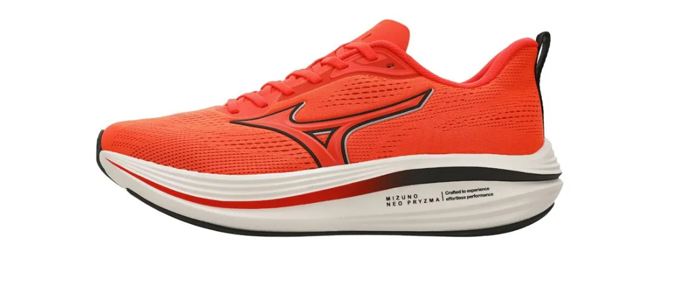

First Step
Plataforma web para comparar de forma simples e objetiva as especificações técnicas de tênis de corrida das principais marcas do mercado.
Marcas e Categorias Avaliadas
- Nike — Modelos de rodagem diária e velocidade (ex: Pegasus 42)
- Mizuno — Modelos com foco em amortecimento e estabilidade (ex: Wave Neo Pryzma)
- Adidas — Tênis leves para treinos de ritmo e provas
- Asics — Calçados de alto conforto para longas distâncias
Comparativo Técnico Inicial
| Modelo |
Marca |
Drop |
Indicação Principal |
| Pegasus 42 |
Nike |
10 mm |
Rodagem diária e treinos versáteis |
| Wave Neo Pryzma |
Mizuno |
8 mm |
Amortecimento macio e conforto |
Fonte de Referência Técnica
Consulte análises detalhadas de calçados no canal
Tênis Certo.
Destaque da Semana
